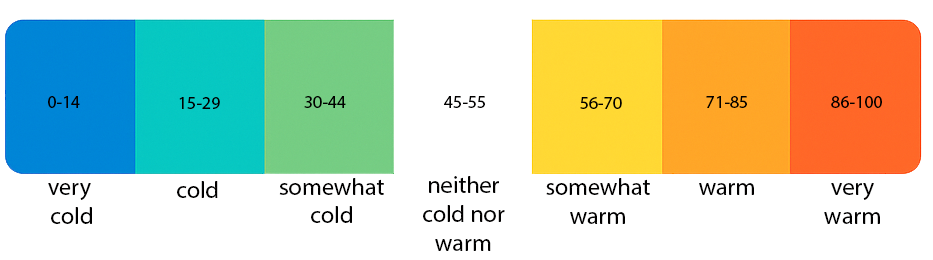

You will soon be shown a political ad. I'd like to get your feelings toward the political candidate who sponsored the ad. You will be asked to play the ad then you will rate the ad (in real-time) using something we call the feeling thermometer. Ratings between 50 degrees and 100 degrees mean that you feel favorable and warm toward the political candidate who sponsored the ad. A rating of 100 means you are very warm towards the ad which translates to liking the political candidate who sponsored the ad very much. Ratings between 0 degrees and 50 degrees mean that you don't feel favorable toward the political candidate who sponsored the ad and that you don't care too much for the him (or her). A rating of 0 indicates that you are very cold toward the political candidate who sponsored the ad and you do not like him (or her) at all. You would rate the ad at the 50-degree mark if you don't feel particularly warm or cold toward the political candidate who sponsored the ad. This assessment will be done in real-time, so you may feel warm toward the political candidate who sponsored the ad at one moment, then cold the next.
Be prepared to watch the ad in its entirety. DO NOT start an ad, then stop and return to rate the rest of the ad at another time. Each ad is around 1-3 minutes, so be sure you have enough time to watch and label the whole ad before you hit "play."
If you understand these instructions, please enter your coder ID and the index number where you left off and click "Next". If this is the first time you have labeled ads for this project, please enter "1" for the index number and click "next." Thank you for your time.